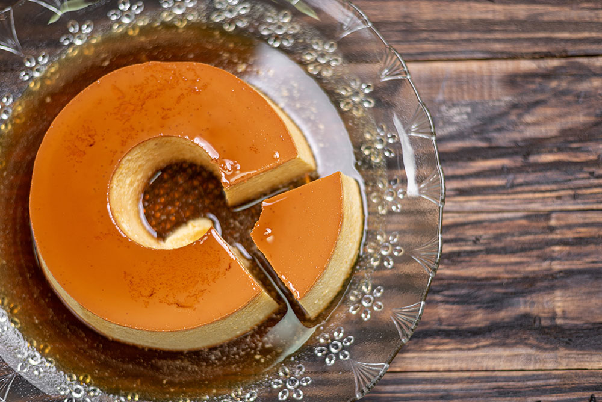

Flan de Queso
Puerto Rican flan de queso is a rich and creamy twist on the traditional caramel flan, made special by the addition of cream cheese. While classic flan is known for its silky, custard-like texture, flan de queso has a denser, velvety body that still keeps the smoothness of flan. The cream cheese not only thickens the custard but also adds a subtle tang that balances the sweetness of the caramel topping. A true island favorite, it’s a dessert made to be savored.
Ingredients
- 1 cup white sugar
- 1 package (8oz) cream cheese, softened
- 1 can (14oz) sweetened condensed milk
- 1 can (12oz) evaporated milk
- 5 large eggs, room temperature
- 2 teaspoons vanilla extract
Instructions
- Preheat to oven 350°F degrees. Set a kettle of water to boil. Set an 8- or 9-inch cake (or pie) pan with 2-inch high sides inside of a larger baking pan (such as a 13x9).
- In a small sauce pan over medium-low heat, melt sugar until completely dissolved. Watch carefully so it does not burn. You may swirl the pan to stir. Remove from heat when it is a dark golden, amber color.
- Immediately pour the melted sugar into the bottom of the cake pan, working quickly before it hardens. Set aside.
- In a blender beat the cream cheese, sweetened condensed milk, evaporated milk, eggs and vanilla. Mix until well combined.
- Strain the custard through a fine-mesh sieve to ensure there are no lumps. Pour the strained custard into the cake pan over the sugar caramel. Next, add boiling water to the larger pan. It should come up the sides about an inch deep. The cake pan will be sitting in a water bath.
- Bake for 1 hour, or until set around the edges with a slight jiggle in the middle. Remove from oven and let the flan cool in the water bath, about an hour. Once cool, refrigerate at least 2 hours, but overnight is best.
- When ready to serve, run a knife around the edges to loosen. Set a plate over the flan and flip upside-down to invert. Slice into wedges and serve.